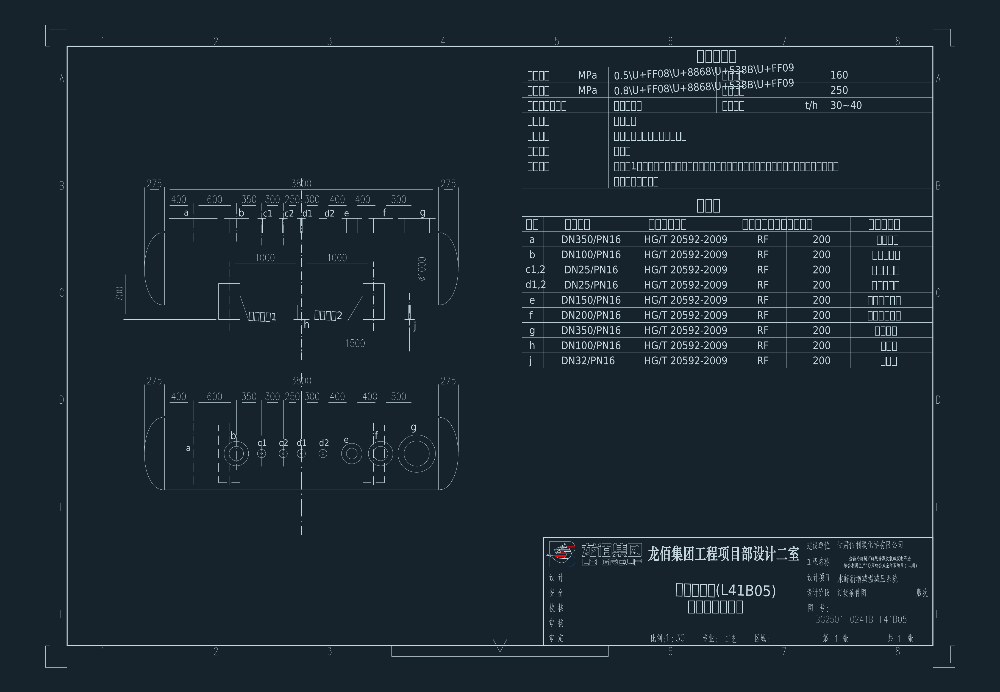

模型 · 量测与句柄 · 安装表 · 支承/空间复核 · 1.0保留版
蒸汽分汽缸 L41B05 · 2.0-L41B05-01
外部本体/接口、基础配合与安装复核；不展开内部工艺构造
DN与外径不是同一量；未给钢管系列/壁厚时按常见外形显示，法兰厚暂18
b表中DN100、俯视内圈约Ø200不一致；采用表中DN100，俯视外廓Ø340保留待核
a与g同为DN350；a俯视未完整表达，按侧视位置/管口表补齐，最终厂家总图待确认
条件图未给鞍座宽/厚，300×800底板及20厚腹板为显示值；鞍座中心距2000与轴高700有图示
原基础仅单墩详图，不能自动认定为完整两鞍座基础；绝对定位、支承数量/方向/标高继续待核
本类仍待定位，不加入厂房总装
未标盖板厚、法兰厚和管外径系列为显示值；不得据此制造
各单台设备的工艺绝对方位待核；不凭文字插点新增位置
原始图纸、1.0、先前八类、建筑/桥架及原土建几何保持
